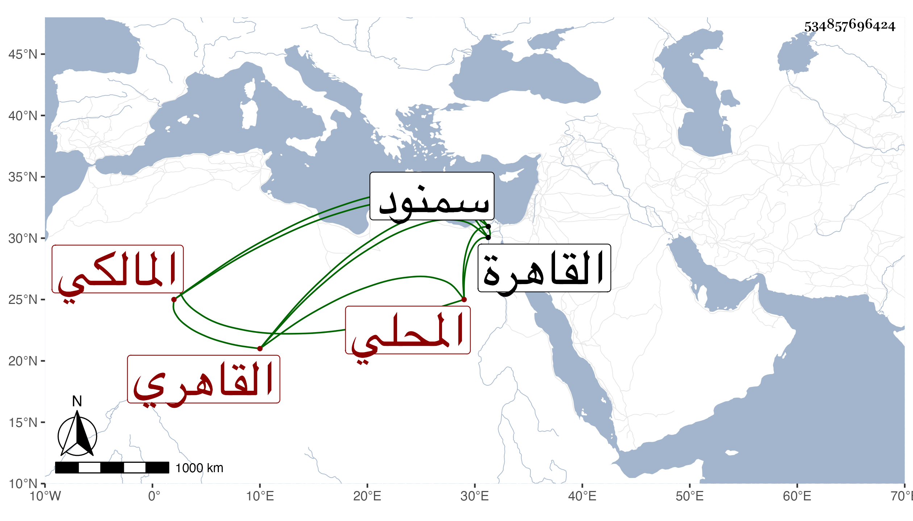

0902Sakhawi.DawLamic.ITO20230111-ara1.EIS1600.534857696424
Biography ID: 534857696424
640
قاسم بن محمد بن محمد بن قاسم بن عبد الله بن عبد الرحمن بن محمد بن عبد القادر الزين أبو العدل بن الشرف بن أبي المكارم بن أبي الفضل المحلي ثم القاهري المالكي سبط الشهاب بن العجيمي والد أوحد الدين وحفيد أخي الولوي محمد بن قاسم الآتي وأبوه وجده ووالد الجلال وأبي الفضل عبد الرحمن الماضي ويعرف كسلفه بابن قاسم وهو زوج أخته الشهاب الأبشيهي الشافعي ابنا خالة فأماهما أختان . ولد بالقاهرة ونشأ بها فحفظ ابن الحاجب واشتغل يسيرا عند الزين طاهر وغيره ولازم حلقة السنهوري في الفقه والعربية مع الساكتين ، وناب في القضاء وأضيف إليه قضاء سمنود وأعمالها وأكثر التردد للأمير تمراز فراج قليلا بل صار ممن يفتي ويذكر بحفظ ابن الحاجب واستحضاره مع إقدام وتناقض في فتياه ورام بعد المحيوي بن تقي القضاء وساعده الشافعي فلم ينجح وولي أخو الميت فأعرض هذا عن النيابة فلم يضر إلا نفسه .
